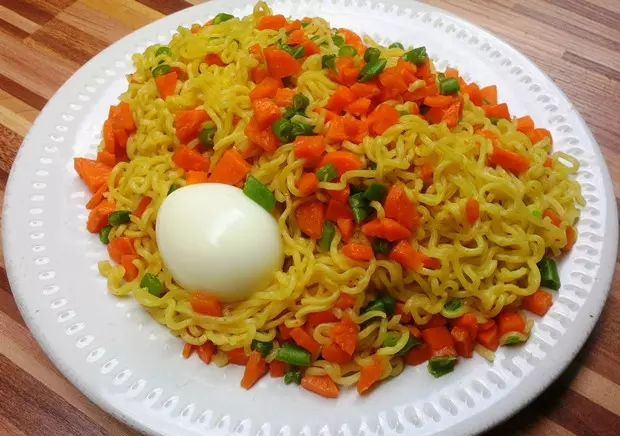

Indomie
Indomie noodles have been able to capture the hearts of most
Nigerians with a series of good products and of course their often captivating commercials.

Ingredients
2 fresh tomatoes
sliced onions
fresh pepper
eggs
50 ml vegetable oil
steps
Pieces the indomie in a bowl and pour boiled water into it, allowing for about five minutes for the noodles to get soft.
Set your frying pan on the heat, add sliced tomatoes, onions, fresh pepper, and fry for about five minutes as well.
Drain water from the noodles after 4 minutes,
and add the follow-come spices while still in the bowl, the noodles will be both soft and hot.
Break the two eggs into the same bowl containing the noodles and stir together, then transfer to the frying pan.
The frying pan contains the fried tomatoes onions and peppers, cook and stir for about five minutes, and you are done.
You just made one of my favorite Nigerian breakfasts, serve with cold soft drinks.